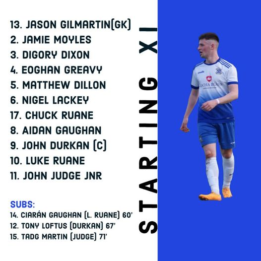

MoyVilla Team
Super Cup Result; Moy Villa 6-1 Fahy Rovers Moy Villa are through to the next round of the Super Cup after a dominant display in tough conditions this morning in Attymass. Captain John Durkan continued his goalscoring form as opened the scoring within 5 minutes when he turned home a John Judge cross. Villa made it 2-0 on 22 minutes when Luke Ruane brilliantly flicked his header on to Durkan who squared across the box to Judge who cooly finished into the bottom right corner. Moy Villa got their third goal on 43 minutes when Chuck Ruane’s pass in behind found Durkan who found the bottom corner to complete the first half scoring. The fourth came on 54 minutes when Durkan again returned the favour by setting up Chuck Ruane to tap into an empty net. John Durkan completed his hat-trick after superb play down the left wing from John Judge before he crossed the ball into the box for Durkan to finish. John Durkan capped a superb individual display by grabbing a hat-trick of assists also, when his cross-come-shot was directed goal bound by substitute Ciarán Gaughan who made his return from injury. Fahy Rovers grabbed a consolation goal with a volley that found the top corner with 15 minutes left to play. It was a dominant display from the Attymass men who played brilliant football in what was atrocious conditions.
